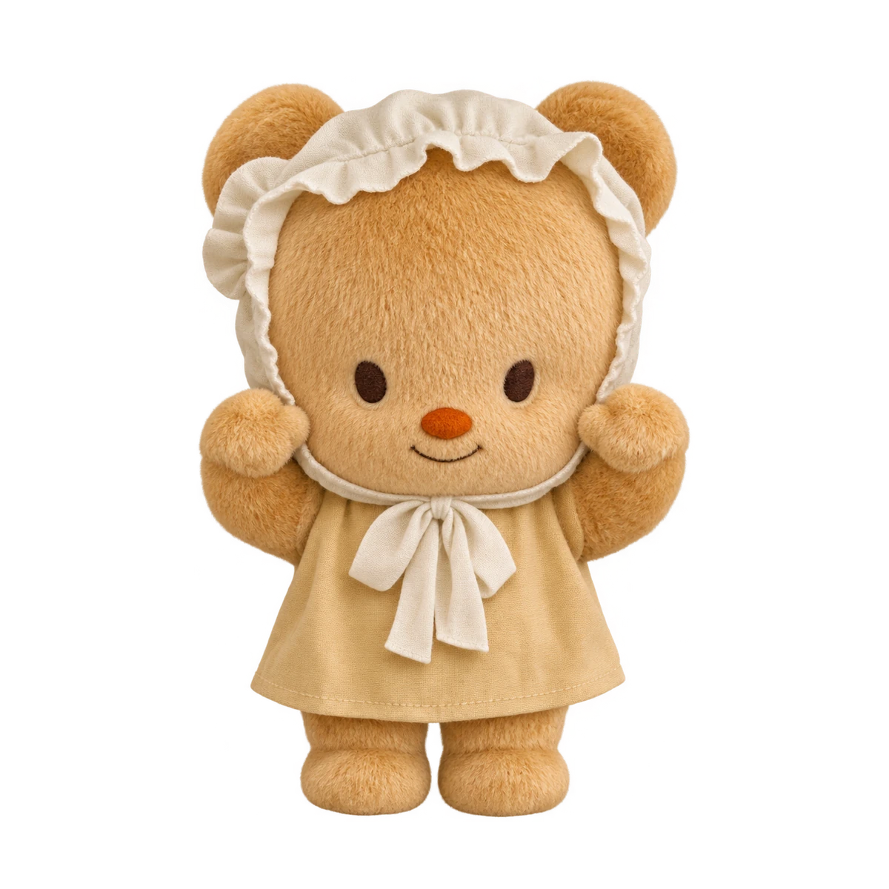

Mascota
de Fern
El osito de Fern acompaña el estudio, la práctica y los resultados.
Probar en pantalla
Pruébala en pantalla
Simula el inicio de una lección, una respuesta y sus estados de apoyo.
Catálogo de poses
Selecciona una pose para probarla. Cada imagen se descarga por separado.